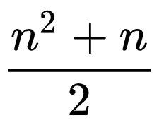

Graph Theory EXPLAINED
Graph theory in the wild — a crafting game
“RoadTrip, MathsJam 2023” — cool video; contains elements of graph theory
“I Made a Graph of Wikipedia... This Is What I Found” — cool video; very graph theory
Contents
- THE BASICS — WHAT IS GRAPH THEORY?
- GRAPH THEORY IN PROGRAMMING
- HISTORY
- USES
- - AIRLINE SCHEDULING (FLOW PROBLEMS)
- - DIRECTIONS (PATHFINDING)
- - MAP COLOURING
- - SEARCH ENGINES
- - SOCIAL MEDIA MARKETING (COMMUNITY DETECTION)
- - LINGUISTICS
- - CHEMISTRY/BIOLOGY
- - NETWORK SECURITY
- - SOCIAL SCIENCES
- - TRANSIT NETWORKS
- RELATED FIELDS
- IMPACT ON SOCIETY
- ETHICS?
- CAREERS
- HOW I USED GRAPH THEORY — FINITE CRAFT
1. THE BASICS — WHAT IS GRAPH THEORY?
Graph theory is a field of discrete mathematics that deals with the ideas of graphs. In their simplest form, graphs are networks of nodes (also known as vertices) connected by edges. Anything that can be drawn as dots connected by lines can also be represented by a graph. Examples of this include road networks, friend groups, electrical circuits, subway systems, and molecular structures.
fig. 1.1 — example graph: a road network

fig. 1.2 — example graph: friends

fig. 1.3 — example graph: a subway system

NODES...
Nodes can be connected to any number of other nodes, or none at all. The degree of a node refers to the number of connected edges.
fig. 1.4 — a graph showing the degree of two nodes

CONNECTED BY EDGES...
Two nodes can be connected by more than one edge, each called a multiple edge. This can represent, say, a multi-lane road or a molecule’s double bond.
Nodes can also be connected to themselves with a special type of edge called a loop. The ends of the subway lines in
fig. 1.3 could be considered loops, as trains turn around when they reach them.
Edges can have a set direction. They
can be one-way, like a one-way street or a link from one website to another, or two-way. Edges with a specified direction are called directed edges.
fig. 1.5 — a graph with one loop and some multiple edges

fig. 1.6 — one-way edges

fig. 1.7 — one-way and two-way edges

FORM A GRAPH!
Graphs without loops or multiple edges (like fig. 1.7) are called simple graphs. Simple graphs that have every possible edge are called complete graphs. Graphs that consist of directed edges are called directed graphs. Both fig. 1.6 and fig. 1.7 are directed graphs. A route from one node to another is called a walk. A walk without repeated edges is called a trail, and a walk without repeated nodes is called a path. A walk that ends at the same node where it began is called a cycle. Any loop or pair of multiple edges is a cycle. Trails and paths that are also cycles are considered closed.
fig. 1.8 — a complete graph
fig. 1.9 — some walks

If a graph contains a closed trail that travels across every edge, that graph is Eulerian. And if a graph contains a closed path that visits every node, that graph is Hamiltonian.
fig. 1.10 — an Eulerian graph and a Hamiltonian graph, both labeled with the walk that makes them so
Most graphs are connected, meaning every node has a degree of at least one, but they can be disconnected, like fig. 1.4 and fig. 1.11.
fig. 1.11 — an example of a disconnected graph: my Obsidian notes (the directed edges are links from one note to another)
")
Other than in fig. 1.8 and fig. 1.11, none of the edges in any of the above diagrams cross. Because graphs aren’t physical objects, but rather representations of networks, it doesn’t matter if edges cross. However, if a graph can be drawn without any edges crossing, it is called a planar graph.
fig. 1.12 — a non-planar graph redrawn as a planar graph

REMEMBER TREES?
If you’ve ever programmed or learned about probability, you’ve probably come across an example of a tree. Trees are a restricted type of graph in which all nodes stem from one, meaning there is only one path between any two nodes. All trees are graphs, but not all graphs are trees.
fig. 1.13 — a tree

THE MATH
In math, graphs are defined as a set of nodes and a set of edges. The set of edges in an undirected graph contains unordered pairs of nodes, and the set of edges in a directed graph contains ordered pairs of nodes. Proper notation is shown in fig. 1.14.
fig. 1.14 — graph notation
The above notation is very easy to convert into code.
2. GRAPH THEORY IN PROGRAMMING
There are a few common ways to represent a graph in code.
ADJACENCY MATRIX
Starting with zero, each node is assigned an index. Create a two-dimensional Boolean array of size n×n, where n is the number of nodes. Edges are represented as true values at the intersections between the two connected nodes. In an undirected graph, this results in two true values for each edge, but in a directed graph there might only be one true intersection. Two nodes are connected if edges[node1][node2] is true.
fig. 2.1 — an adjacency matrix (undirected graph)
ADJACENCY LIST
This is very similar to an adjacency matrix: each node has an index and edges are stored in a two-dimensional array. The difference is that, while the array still has a row for each node, each row only contains the indices of the connected nodes. Two nodes are connected if edges[node1] contains node2.
fig. 2.2 — an adjacency list (same graph as before)
An adjacency list is much easier to write manually, and a lot easier to read.
AN ARRAY AND AN OBJECT
When I was making Finite Craft (see 9. HOW I USED GRAPH THEORY — FINITE CRAFT), I needed an array of recipes and an object with item data. The structure in fig. 2.3 is what I ended up using. This structure makes determining if two nodes are connected more difficult, but because the nodes retain their name, it’s very easy to read and write.
fig. 2.3 — my method
3. HISTORY
In 1736, Leonhard Euler wrote the first paper on what is now considered graph theory to prove that the Seven Bridges of Königsberg problem has no solution.
At
some point, the city of Königsberg (now Kaliningrad, Russia)
had seven bridges in close proximity, as shown in fig. 3.1. Supposedly, the people of Königsberg used to entertain themselves
by attempting to find a route around the city that used each bridge exactly once. None of them were successful because, as Euler would prove mathematically, the
Seven Bridges of Königsberg is an impossible puzzle.
fig. 3.1 — Königsberg, 1736

fig. 3.2 — Königsberg in graph form

If we consider each section of land to be a node, and each bridge to be an edge, then we get the graph in fig. 3.2. If the
graph is Eulerian (you have one guess as to where we get that term from), then there is a route that uses every bridge only once.
fig. 3.2 is not an Eulerian graph. What Euler essentially said in his paper was that a connected graph is Eulerian if the
degree of every node is even. You can see an example of this if you refer back to fig. 1.10. In
fig. 3.2, every node is of odd degree, much to the people of Königsberg’s disappointment.
Almost 150 years later,
the first use of the term “graph” appeared in the
February 7th, 1878 edition of Nature. The article, written by J. J. Sylvester, looked at similarities between chemistry and algebra.
Over 50 years after that, around 1931, the first
textbook on graph theory, written by Dénes Kőnig, was published. Since then, many more books on graph theory have been written, providing mathematicians,
chemists, electrical engineers, social scientists, and many more professions with ways of communicating their ideas.
In 2004, the Academy of Discrete
Mathematics and Applications declared June 10th to be Graph Theory Day.
4. USES
Graph theory has an endless number of applications.
AIRLINE SCHEDULING (FLOW PROBLEMS)
Graph theory helps airlines optimize their flights and operate with the fewest number of crew members. This could allow them to offer more flights and better use their fleet of aircraft. Here, the graph’s nodes are cities and the edges are flights.
DIRECTIONS (PATHFINDING)
Weighted graphs and pathfinding algorithms find the best or shortest route between two points. Google Maps, maze solvers, and entities in some video games all make use of Dijkstra’s algorithm, A*, or some other shortest path algorithm. Typically, these algorithms look for the path between two given points with the lowest cost, where the total cost is equal to the total of the weights of each edge in the path.
fig. 4.1 — a graph of a hypothetical road network weighted based on distance and speed limit
MAP COLOURING
Have you ever wondered how maps (with solid colours) get their colours? Any plane separated into regions can be coloured with just four colours, and no two regions with the same colour will touch. This is called the four colour theorem. The theorem states that any planar graph with no loops can be coloured with four (or fewer) colours.
fig. 4.2 — the world, with just four colours [external; click to view source]
![the world, with just four colours [external; click to view source]](https://commons.wikimedia.org/wiki/File:World_map_with_four_colours.svg "the world, with just four colours [external; click to view source]")
fig. 4.3 — the USA, with just four colours [external; click to view source]
![the USA, with just four colours [external; click to view source]](https://commons.wikimedia.org/wiki/File:Map_of_United_States_accessible_colors_shown.svg "the USA, with just four colours [external; click to view source]")
SEARCH ENGINES
Search engines like Google create a directed graph of websites (the nodes) and hyperlinks (the edges). This helps them determine the pages that a series of links eventually lead to and which are the most popular, making for more relevant search results.
SOCIAL MEDIA MARKETING (COMMUNITY DETECTION)
Graphs of social networks, where individual people are nodes and friends are edges, can be grouped (by an algorithm) into clusters of people who are more connected to each other than to people in another cluster. This helps advertisers since people in the same cluster are likely to have similar interests, characteristics, ideas, and desires.
LINGUISTICS
Here, graphs may represent similarities between words or languages, or show where words or languages originated from.
CHEMISTRY/BIOLOGY
Graphs of molecular structures and whole lattices can be used to investigate different atoms and molecules in terms of bonds and shape.
NETWORK SECURITY
Graphs can be used to determine the number of redundancies or the weakest link in a system.
SOCIAL SCIENCES
Graphs have been used to study the spreading of rumors, friendship, influence, behavior, and collaboration.
TRANSIT NETWORKS
Transit maps are essentially graphs to begin with, and a graph of a transit system could be used to determine why certain areas are busier and where more service would be useful.
5. RELATED FIELDS
As you saw above, there are so many fields, other than computer science, that can make use of graph theory. Pretty much any field that deals with things that are at all related or connected to other things could use graph theory—and probably already do.
6. IMPACT ON SOCIETY
Another takeaway from the above list of uses is that graph theory is all around us. Probably the most prominent example of graph theory in everyday life is
Google Maps, an app that tells millions of people the best way to get to where they need/want to go. And the reduced travel times that come from knowing the
best route means lower travel-related expenses, like gas.
Pathfinding is also very useful to companies like Amazon, who have giant warehouses and
robots that have to find things. Graph theory is therefore one of the reasons why Amazon is so successful and why they can ship things so fast.
Some
of the other examples, such as search engines and social media marketing have become very prevalent in the last couple of decades, due in no small part to
graphs and their properties.
7. ETHICS?
Graph theory is a mathematical concept, so using it is neither moral nor immoral. Where ethics come into play is what you do with it. The ACM and IEEE both have very detailed codes of ethics that you can refer to. Essentially, don’t use graph theory for anything illegal or anything that could cause harm or discriminate against certain people or groups. Make sure to have a positive impact on society, be honest and trustworthy, and respect people’s privacy.
8. CAREERS
As I’ve said before (see 5. RELATED FIELDS and
4. USES), graph theory is hard to avoid. All manner of fields outside computer science and mathematics use
graphs and the like for all manner of purposes. However, to use graphs to their full potential, it would be useful for one to have a background in mathematics.
This explainer barely scratches the surface of the massive iceberg that is graph theory, and the deeper down the rabbit hole you go, the more intense the math
becomes.
With all that said, software engineering still remains the most common example of a career that could make use of graph theory. Graph theory
just lends itself really well to the problems programmers encounter. Becoming a software engineer generally requires a degree in software engineering or
computer science. Once you’ve got one of those, if you don’t already know most of what there is to know about graph theory, you can learn a great deal from some
very good books that can be found for free online.
9. HOW I USED GRAPH THEORY — FINITE CRAFT
Inspired by Neal Agarwal’s Infinite Craft, a game where you can combine the four elements into whatever you can imagine, I made Finite Craft. Each item can be considered a node in a graph, and each edge a combination, or recipe, that makes a new item. The code contains a large array of recipes and results, and although new items aren’t AI generated like they are in Infinite Craft, it’s still pretty fun. Thinking about the items in terms of graph theory let me make sure I added every combination of the first four items. The number of possible combinations between any number of items is a triangular number, and can be found with the formula in fig. 9.3.
fig. 9.1 — connections between the initial elements in Finite Craft
fig. 9.2 — the first dozen recipes in Finite Craft
fig. 9.3 — the triangular number formula
Glossary
- discrete mathematics — an area of mathematics that deals with countable or separable structures
- graphs — diagrams that show relation or connection between things
- nodes — also known as vertices; the points in a graph
- edges — connect nodes
- node degree — the number of edges connected to a given node
- multiple edges — an edge that is not the only one connecting two nodes
- loops — edges that connect a node to itself
- directed edges — edges with direction, be it one-way or two-way
- simple graphs — graphs without loops or multiple edges
- complete graphs — graphs in which every node is connected to every other node
- directed graphs — graphs that contain directed edges
- walks — a route from one node to another
- trails — a walk without repeated edges
- paths — a walk without repeated nodes
- cycles — a walk that ends at the same node where it began
- closed trails/paths — trails or paths that are also cycles
- Eulerian graphs — graphs with a closed trail that travel across every edge
- Hamiltonian graphs — graphs with a closed path that visits every node
- connected graphs — graphs in which every node has a degree of at least one; the graph is one big piece
- disconnected graphs — graphs that have multiple, non-connected sections
- planar graphs — graphs in which none of the edges cross
- trees — graphs in which all nodes can be traced back to one original node; there is only one path between any two nodes
- unordered pairs — pairs of numbers for which their order does not matter
- ordered pairs — pairs of numbers for which their order does matter
- indices — numbers that define an element’s position in an array
- Booleans — true or false values
- weighted graphs — graphs with nodes, edges, or both with weights applied to them
- pathfinding algorithms — algorithms that find the shortest or best path between two points
- Dijkstra’s algorithm — a pathfinding algorithm
- A* — read “a-star”; a more efficient version of Dijkstra’s algorithm
- the ACM — the Association for Computing Machinery
- the IEEE — the Institute of Electrical and Electronics Engineers
- triangular numbers — a number such that, if that many objects were placed in a triangle shape, they would form an equilateral triangle (example: bowling pins)
Sources
- Abiy, Thaddeus, et al. “A* Search.” Brilliant.org, 2024, https://brilliant.org/wiki/a-star-search/. Accessed 3 March 2024.
- Association for Computing Machinery. “ACM Code of Ethics and Professional Conduct.” Association for Computing Machinery, 2024, https://www.acm.org/code-of-ethics. Accessed 2 March 2024.
- Biggs, Norman, et al. Graph theory, 1736-1936. Clarendon Press, 1986. Google Books, https://books.google.ca/books?id=XqYTk0sXmpoC&lpg=PP1&pg=PA1#v=onepage&q&f=false. Accessed 2 March 2024.
- GeeksforGeeks. “Graph and its representations.” GeeksforGeeks, 13 November 2012, https://www.geeksforgeeks.org/graph-and-its-representations/. Accessed 2 March 2024.
- Hayes, Andy, et al. “Discrete Mathematics.” Brilliant.org, 2024, https://brilliant.org/wiki/discrete-mathematics/. Accessed 3 March 2024.
- IEEE Information Theory Society. “14th ANNUAL ADMA CONFERENCE & GRAPH THEORY DAY.” IEEE Information Theory Society, 2018, https://www.itsoc.org/conferences/submit/14th-annual-adma-conference-graph-theory-day. Accessed 1 March 2024.
- Iñiguez, Agustín. “Graph theory and its uses with 5 examples of real life problems.” Xomnia, 11 April 2022, https://www.xomnia.com/post/graph-theory-and-its-uses-with-examples-of-real-life-problems/. Accessed 2 March 2024.
- Institute of Electrical and Electronics Engineers. “IEEE Code of Ethics.” Institute of Electrical and Electronics Engineers, 2024, https://www.ieee.org/about/corporate/governance/p7-8.html. Accessed 2 March 2024.
- Javatpoint. “Applications of Graph Theory.” Javatpoint, 2021, https://www.javatpoint.com/graph-theory-applications. Accessed 2 March 2024.
- Joshi, Vaidehi. “A Gentle Introduction To Graph Theory.” Medium, 20 March 2017, https://medium.com/basecs/a-gentle-introduction-to-graph-theory-77969829ead8. Accessed 21 February 2024.
- Sylvester, J. J. “Chemistry and Algebra.” Nature, vol. 17, no. 432, 1878, p. 284. Internet Archive, https://archive.org/details/nature15unkngoog/page/n15/mode/1up. Accessed 2 March 2024.
- Tutte, W. T. Graph Theory. Cambridge University Press, 2001. Google Books, https://books.google.ca/books?id=uTGhooU37h4C&pg=PA30&redir_esc=y#v=onepage&q&f=false. Accessed 2 March 2024.
- Wikipedia contributors. “Four color theorem.” Wikipedia, Wikipedia, The Free Encyclopedia, 20 February 2024, https://en.wikipedia.org/w/index.php?title=Four_color_theorem&oldid=1209115256. Accessed 21 February 2024.
- Wikipedia contributors. “Graph theory.” Wikipedia, Wikipedia, The Free Encyclopedia, 14 February 2024, https://en.wikipedia.org/w/index.php?title=Graph_theory&oldid=1207303495. Accessed 2 March 2024.
- Wikipedia contributors. “Seven Bridges of Königsberg.” Wikipedia, Wikipedia, The Free Encyclopedia, 19 February 2024, https://en.wikipedia.org/w/index.php?title=Seven_Bridges_of_K%C3%B6nigsberg&oldid=1208924413. Accessed 2 March 2024.
- Wikipedia contributors. “Triangular number.” Wikipedia, Wikipedia, The Free Encyclopedia, 13 January 2024, https://en.wikipedia.org/w/index.php?title=Triangular_number&oldid=1195279122. Accessed 2 March 2024.
- Wilson, Robin J. Introduction to Graph Theory. 4 ed., Longman, 1996, https://www.maths.ed.ac.uk/~v1ranick/papers/wilsongraph.pdf. Accessed 21February 2024.